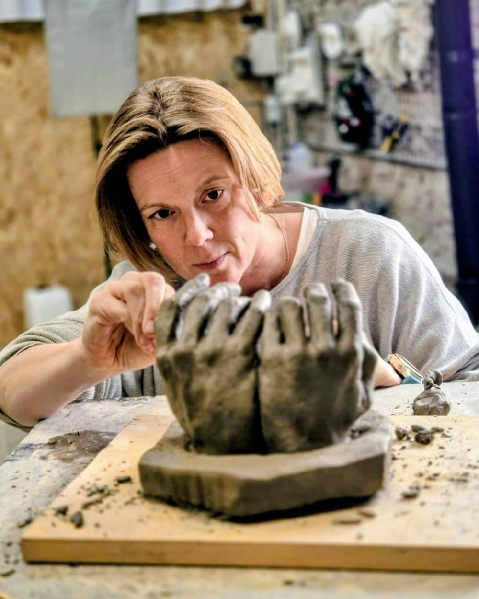
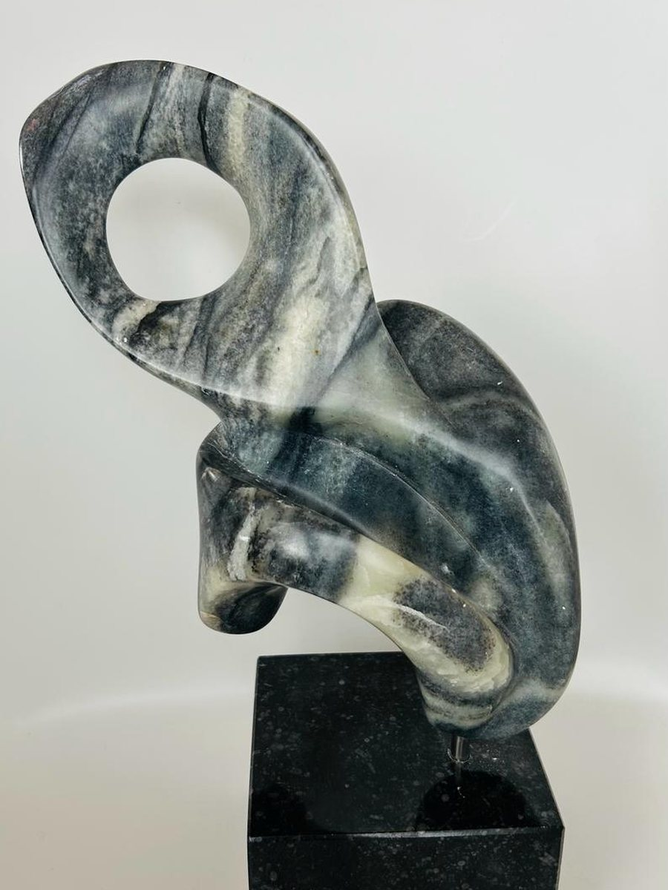
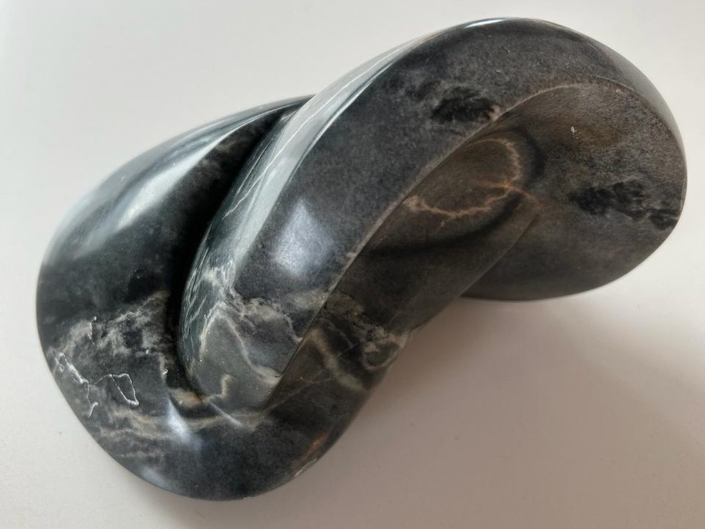

Practical
Grounded in real corporate experience. I have tested every recommendation in the real world, not in theory.
Executive Business Coach & Business Advisor
For over 20 years I have helped organizations and executives work through complex ethical, regulatory and leadership challenges. My practical ways of working are grounded in extensive global corporate experience and a growing private practice for professional coaching.
Throughout my website, you will see images of sculptures and other artwork. They are all my own creations. It is important to me to bring together two parts of my life that have always mattered deeply to me: my professional career and my lifelong passion for art, particularly sculpture.
Over the years, I have come to realize that the process of creating art has taught me many of the same lessons that I have encountered in my professional life.
Sculpting can be incredibly daunting. You may start with an abstract idea that exists only in your mind, or with a model standing in front of you whose form and movement you are trying to capture. Either way, you are faced with a material—stone, clay, wood or metal—and somehow have to turn it into something that does not yet exist.
The first challenge is simply to begin. You have to overcome the sculptor’s version of the blank-page anxiety: stop thinking about everything that could go wrong, put your hands on the material and start.
Then comes the courage to push beyond what feels safe. If you want to create something that is genuinely yours, at some point you have to trust your own judgment. The result may not be perfect, but it carries your signature. It could not have been created in exactly the same way by somebody else, because you were part of the creation process.
I see a strong parallel with our working lives. We bring our own experience, judgment, personality and perspective to what we do. Our contribution changes the outcome. Take us out of the equation and something different would have been created.
Perhaps the hardest lesson sculpture has taught me is that creating something new sometimes requires you to deconstruct—or even destroy—something you have worked incredibly hard to build.
With clay sculpture, this is quite literal. Clay eventually dries and breaks, so a finished sculpture needs to be cast if it is to survive. After weeks of carefully creating the right proportions, angles, expressions and movement, the original piece is dismantled. Something you have invested enormous time and energy in is quite literally reduced back to earth and dust.
What remains is the cast: something more durable, something that can be reproduced, adapted and carried forward.
There is a moment before that happens when you have to look at your work and decide: this is it. This is what I wanted—or what I was capable of creating, at this point in time. And now I am ready to let it go.
That takes courage and conviction. Not because the work was perfect, but because you recognize that it has reached the end of this particular stage. You take what it has taught you and move on—perhaps in a completely different direction, perhaps to the next piece.
Our professional lives are not so different. We do not always get to finish what we start. Roles change, companies transform, teams move on and priorities shift. Sometimes we have to leave behind things we have built and cared deeply about. We have to learn to live with the gaps and the unfinished edges.
But the experience is not lost. We take what we have learned—our skills, judgment, successes, mistakes and perspective—and bring it into a new setting.
Navigate complexity and transition, strengthen decision-making, build resilience in high-stakes environments.
20+ years designing, implementing and managing compliance programs. Practical expertise in anti-bribery frameworks and regulatory requirements.
Board-level experience advising on strategic governance, regulatory risk and organizational risk management.
Build cultures of integrity while managing ethical challenges at scale. Hands-on experience shaping culture in global organizations.
Led internal investigations, managed regulatory crises and liaison with authorities. Clear-headed crisis leadership.
Deep understanding of how to operate ethically and effectively across diverse regulatory environments, industries and cultural contexts.
Four principles shape my coaching and advisory work. Each one comes from doing the job, not from reading about it.
Grounded in real corporate experience. I have tested every recommendation in the real world, not in theory.
I don't stop at the presenting problem. I look for the root cause, and tie the advice back to where your organization is going.
Complex topics become clear, actionable insights. I translate regulatory complexity and leadership challenges into language your teams can actually use.
Integrity isn't an afterthought. Building ethical, high-performing organizations is central to how I work.
One-to-one coaching for senior leaders, C-suite executives and board members. Work through the decisions only you can make, with someone who has held the role.
Learn more →Advisory on anti-bribery and corruption, governance, investigations and regulatory risk. Built from two decades running these programs inside a global organization.
Learn more →Facilitated sessions for leadership teams and compliance functions. I translate regulatory complexity into language teams can act on.
Contact for details →Away from client work I sculpt, in clay and bronze. It is slow, deliberate work, made by hand: a figure takes shape over months and will not be hurried. I find the same is true of people.


